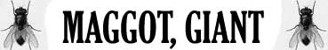
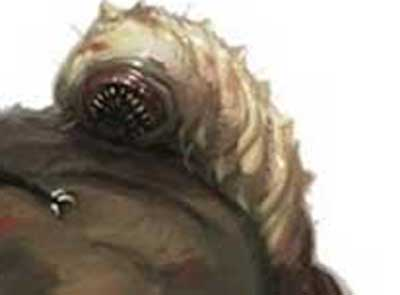

|
|
Ambiente/Habitat | Qualsiasi (non artico ed acquatico) |
| Frequenza | Comune | |
| Organizzazione | Solitario o Coppia | |
| Periodo di Attività | Qualsiasi | |
| Dieta | Carnivora | |
| Intelligenza | Non Intelligent (0) | |
| Punti Combattimento | Nessuno | |
| Tesoro | Nessuno | |
| Allineamento Dominante | Neutrale | |
| Numero di Apparizione | 1d10: (1-7) 1 (8-10) 2 | |
| Classe Armatura | 4 [10 base, 3 corazza, 3 destrezza] | |
| Movimento | 4 esagoni / volare 10 esagoni | |
| Dadi Vita | 3 (+5 punti ferita) | |
| Thac0 | Thac0 18 | |
| Numero di Attacchi | Morso | |
| Danni | 1d4 (taglio) + 4 (acido) | |
| Poteri Offensivi |
Attacco Veloce Inferiore; Malattia (Pus Virulento); |
|
| Poteri Difensivi |
Schivata
Migliorata; Robustezza Superiore (+5 punti ferita); |
|
| Poteri Generici | Nessuno; | |
| Vulnerabilità | Nessuna; | |
| Resistenza alla Magia | Nessuna; | |
| Sensi | Oscurovisione; Senso del Tremore (18 metri); | |
| Dimensioni | Medium (1,80 m. lunghezza) | |
| Morale | Steady (11) | |
| Valore in Punti Esperienza | 203 |
|
TIRI SALVEZZA DELLA CREATURA |
|||||||
| CORAGGIO | ENERGIA VITALE | MAGIA | MALATTIA | MENTE | RIFLESSI | ROBUSTEZZA | VELENO |
| 0 | 0 | 0 | +10% | 0 | +10% | 0 | 0 |
| 49 | 55 | 62 | 37 | 60 | 44 | 53 | 49 |
Descrizione
Un'enorme ed orrenda mosca nera lunga quasi due metri. Hanno un corpo compatto e occhi sfaccettati rossi. Le due ali che si muovono con estrema rapidità sono trasparenti e ricche di venature.
Combat
Le mosche giganti combattono mordendo il loro avversario e provocando una dolorosa ferita sia da taglio che da acido a causa della loro saliva altamente corrosiva.
ATTACCO VELOCE INFERIORE (Least Special Ability): Questa creatura è in grado di effettuare i propri attacchi più velocemente del normale. Costei quindi riceve un bonus all'iniziativa dei propri attacchi pari a - 1, fermo restando il limite minimo di +1 al fattore iniziativa del proprio attacco. Inoltre, qualora i tiri di iniziativa sugli attacchi effettuati dalla creatura abbiano un risultato superiore, questi saranno considerati pari a 9.
MALATTIA (Lesser Special Ability) : Queste creature possono trasmettere una malattia. Alla fine del combattimento contro le stesse ogni creatura sensibile alle malattie avrà una possibilità pari al 2% per danno subito da queste creature di essere stata sottoposta a contagio e, quindi, dovrà superare un tiro salvezza contro malattia per verificare se si è ammalata.
Pus Virulento
Tipo
di Contagio: Esposizione
diretta alla fonte
Tiro salvezza:
Nessun modificatore
Incubazione:
1 giorno
Prima fase:
3d10 giorni -
Sul corpo del malato
appaiono grosse bolle di circa 5 cm. di diametro che provocano un intenso
fastidio e prurito. Il malato ottiene, quindi, una penalità di -1 a tutti i suoi tiri, alla
classe armatura ed il 10% di fallire nella concentrazione.
Tiro salvezza:
Malus -3
Seconda fase:
2d6+3 giorni -
Le bolle sul corpo del
malato si riempiono di pus virulento e la temperatura della vittima sale
precipitosamente. In tutta questa fase il malato sarà considerato inabilitato.
Tiro salvezza:
Nessun Modificatore
Ultima fase:
Morte del Malato.
Immunizzazione:
Un anno
Note:
Un ammalato che raggiunge la
seconda fase di malattia, nonostante guarisca, manterrà sul proprio corpo il
segno delle bolle. Per tale motivo costui riceverà una penalità di -2 a tutte le
prove di appearance effettuate ed il suo carisma si considererà a tutti gli
effetti ridotto di un punto. Tale penalità perdurerà per un anno e potrà essere
rimossa anticipatamente solo attraverso una potente magia di rigenerazione.
SCHIVATA MIGLIORATA (Moderate Special Ability): La creatura è particolarmente agile. Una volta al round, infatti, la stessa potrà provare a schivare un qualsiasi attacco ricevuto in corpo a corpo da una posizione frontale che non sia di dimensioni superiori a large. La creatura ha il 25% di riuscire a schivare il colpo in arrivo. Questo tiro percentuale va effettuato prima del tiro per colpire effettuato dall'avversario. Se l'avversario effettua un 20 naturale sull'attacco che la creatura era riuscita a schivare lo stesso andrà comunque a segno ma senza conseguenze critiche. Al tiro percentuale andranno applicate le penalità previste per il mantenimento della concentrazione in situazioni di combattimento particolari (come ad esempio incapacitato). La creatura non potrà provare a schivare in alcun caso attacchi a distanza.
ROBUSTEZZA SUPERIORE (Typical Ability): Il fisico della creatura è estremamente robusto conferendo alla stessa una robustezza superiore che gli garantisce 5 punti ferita supplementari.
Habitat/Society
Le mosche giganti abitano in tane rappresentate da cunicoli stretti nelle vicinanze di acqua stagnante e comunemente marcia. Una tana tipicamente contiene 2d4+2 mosche giganti e 2d4+2 larve giganti. Le mosche giganti lasciano a turno da sole od in coppia per andare a caccia. Quando nascono queste creatura hanno la forma di una larva gigante (vedi sotto) una volta trasformatesi in mosche (dopo circa sei mesi di vita) possono sopravvivere per altri tre anni.
Ecology
Le mosche giganti
si sostengono con una dieta basata sul sangue delle loro vittime che succhiano
una volta che la preda è stata abbattuta. In particolare, una volta uccisa la
preda la cospargono con la loro saliva corrosiva sciogliendone il corpo al fine
di renderlo una poltiglia informe che possono usare come nutrimento.
Le mosche giganti
mangiano qualsiasi creatura avente corpo di tipo animale e si nutrono anche
delle carcasse ritrovate fortunosamente.
Mystical Resource Sourge
(Saliva) Quantità: 1, Presenza 10% - Effetto Particolare:
Acido
- Qualità della Risorsa:
Common.
Mystical Resource Sourge
(Sangue) Quantità: 1, Presenza 10% - Effetto Particolare:
Malattia
- Qualità della Risorsa:
Common.

|
 |
Ambiente/Habitat | Qualsiasi (non artico ed acquatico) |
| Frequenza | Comune | |
| Organizzazione | Solitario o Gruppo | |
| Periodo di Attività | Qualsiasi | |
| Dieta | Carnivora | |
| Intelligenza | Non Intelligent (0) | |
| Punti Combattimento | Nessuno | |
| Tesoro | Nessuno | |
| Allineamento Dominante | Neutrale | |
| Numero di Apparizione | 1d10: (1-6) 1 (7-10) 2d4+2 | |
| Classe Armatura | 9 [10 base, 1 corazza] | |
| Movimento | 4 esagoni | |
| Dadi Vita | 2 (+5 punti ferita) | |
| Thac0 | Thac0 19 | |
| Numero di Attacchi | Morso | |
| Danni | 1d4+1 (taglio) | |
| Poteri Offensivi |
Rigurgito Intestinale; Malattia (Pus Virulento); |
|
| Poteri Difensivi | Robustezza Superiore (+5 punti ferita); | |
| Poteri Generici | Nessuno; | |
| Vulnerabilità | Nessuna; | |
| Resistenza alla Magia | Nessuna; | |
| Sensi | Senso del Tremore (18 metri); | |
| Dimensioni | Medium (1 m. lunghezza) | |
| Morale | Steady (11) | |
| Valore in Punti Esperienza | 63 |
|
TIRI SALVEZZA DELLA CREATURA |
|||||||
| CORAGGIO | ENERGIA VITALE | MAGIA | MALATTIA | MENTE | RIFLESSI | ROBUSTEZZA | VELENO |
| 0 | 0 | 0 | +10% | 0 | -5% | 0 | 0 |
| 52 | 58 | 65 | 41 | 63 | 62 | 56 | 53 |
Descrizione
Una larva bianca e grossa come un bambino. La sua bocca termina in piccoli denti acuminati.
Combat
Le larve di mosca gigante sono fameliche ed attaccano qualsiasi cosa si muova. Prima di colpire in corpo a corpo provano, però, a spruzzare il loro disgustoso rigurgito sulla vittima per indebolirla.
RIGURGITO INTESTINALE (Lesser Special Ability) : In luogo di compiere una diversa azione complessa questa creatura può sputare un disgustoso rigurgito intestinale su una singola vittima che si trovi entro 9 metri di distanza. Si tratta di un'azione complessa, ad iniziativa +2, su una singola creatura. La vittima può evitare il getto superando un tiro salvezza su riflessi. Se il tiro salvezza fallisce la palla di fluido intestinali colpirà la vittima che dovrà superare un tiro salvezza su robustezza per non restare incapacitata per 1d3+1 round a causa del fetore disgustoso. Le creature non dotate di comune corpo di tipo animale sono immuni a tale effetto. Una volta utilizzato questa abilità la creatura non potrà utilizzarlo nuovamente nei quattro round di combattimento immediatamente successivi.
MALATTIA (Lesser Special Ability) : Queste creature possono trasmettere una malattia. Alla fine del combattimento contro le stesse ogni creatura sensibile alle malattie avrà una possibilità pari al 2% per danno subito da queste creature di essere stata sottoposta a contagio e, quindi, dovrà superare un tiro salvezza contro malattia per verificare se si è ammalata.
Pus Virulento
Tipo
di Contagio: Esposizione
diretta alla fonte
Tiro salvezza:
Nessun modificatore
Incubazione:
1 giorno
Prima fase:
3d10 giorni -
Sul corpo del malato
appaiono grosse bolle di circa 5 cm. di diametro che provocano un intenso
fastidio e prurito. Il malato ottiene, quindi, una penalità di -1 a tutti i suoi tiri, alla
classe armatura ed il 10% di fallire nella concentrazione.
Tiro salvezza:
Malus -3
Seconda fase:
2d6+3 giorni -
Le bolle sul corpo del
malato si riempiono di pus virulento e la temperatura della vittima sale
precipitosamente. In tutta questa fase il malato sarà considerato inabilitato.
Tiro salvezza:
Nessun Modificatore
Ultima fase:
Morte del Malato.
Immunizzazione:
Un anno
Note:
Un ammalato che raggiunge la
seconda fase di malattia, nonostante guarisca, manterrà sul proprio corpo il
segno delle bolle. Per tale motivo costui riceverà una penalità di -2 a tutte le
prove di appearance effettuate ed il suo carisma si considererà a tutti gli
effetti ridotto di un punto. Tale penalità perdurerà per un anno e potrà essere
rimossa anticipatamente solo attraverso una potente magia di rigenerazione.
ROBUSTEZZA SUPERIORE (Typical Ability): Il fisico della creatura è estremamente robusto conferendo alla stessa una robustezza superiore che gli garantisce 5 punti ferita supplementari.
Habitat/Society
Le larve di mosche gigante sono costrette in questo stadio per sei mesi prima di chiudersi in un bozzolo per la metamorfosi in mosche giganti (processo che richiede circa dieci giorni).
Ecology
Queste larve sono
estremamente voraci e cercano di nutrirsi di qualsiasi cosa per divenire alla
fine una mosca gigante.
Mystical Resource Sourge
(Sangue) Quantità: 1, Presenza 10% - Effetto Particolare:
Malattia
- Qualità della Risorsa:
Common.